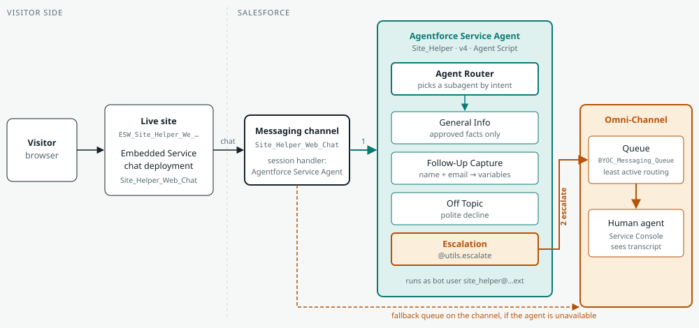

Agentforce, Slackforce, Claudeforce
A working example of Salesforce agents for self-service and human handoff, the Slack alerts around them, and how Claude built and documented it. Pick a page.

Three pages
Agentforce
The Site Helper chat agent, how it escalates to a human through Omni-Channel, the internal Case Triage agent, with architecture, code and configuration.
Open agentforce.htmlSlackforce
How Salesforce posts case alerts and a daily digest to Slack, the agent-in-Slack option, and who does each setup step.
Open slackforce.htmlClaudeforce
How Claude Code and Claude in Chrome were used, where a human approved, and what went wrong along the way.
Open claudeforce.htmlAt a glance
